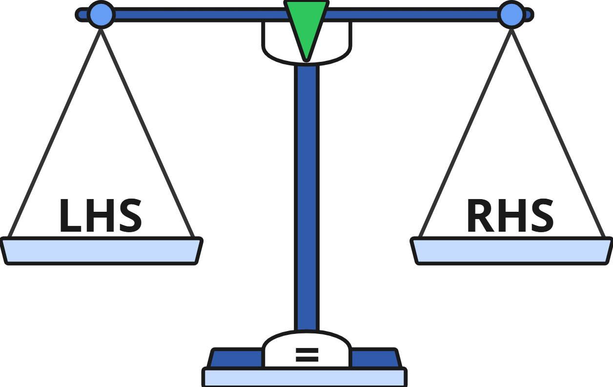
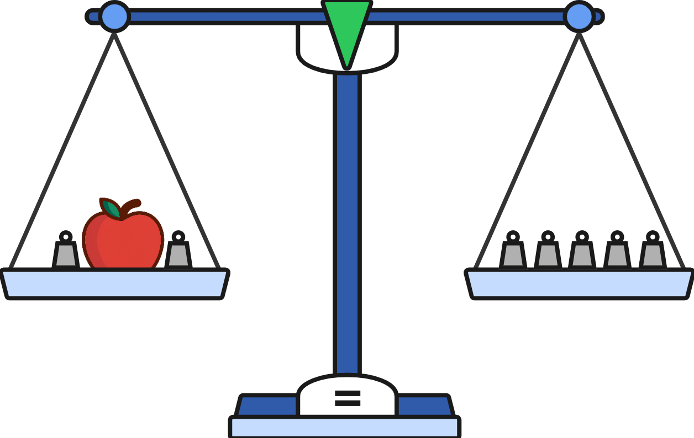
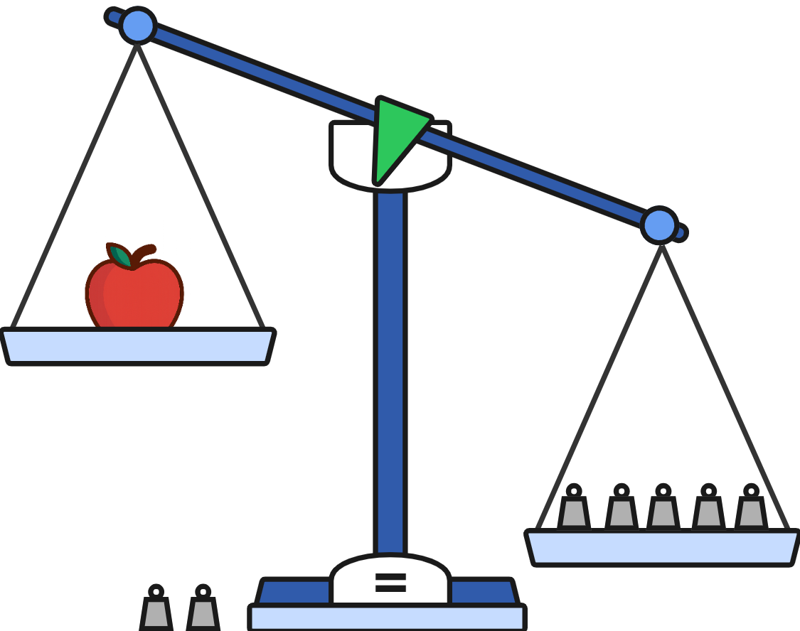
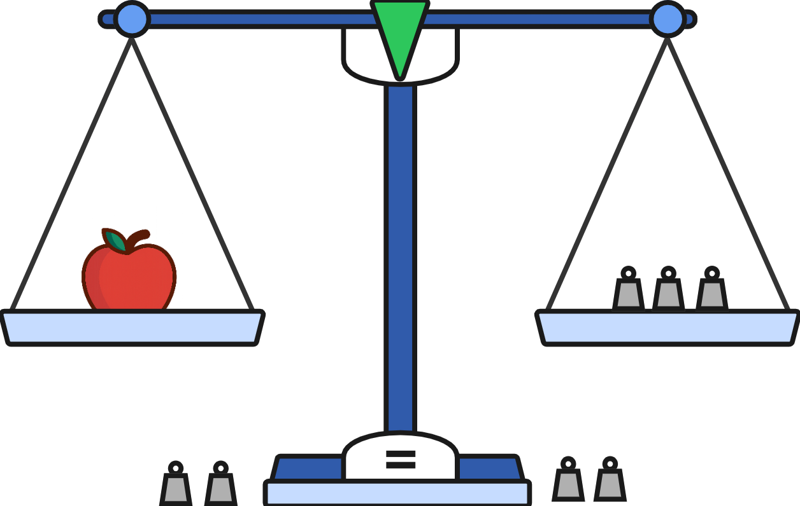
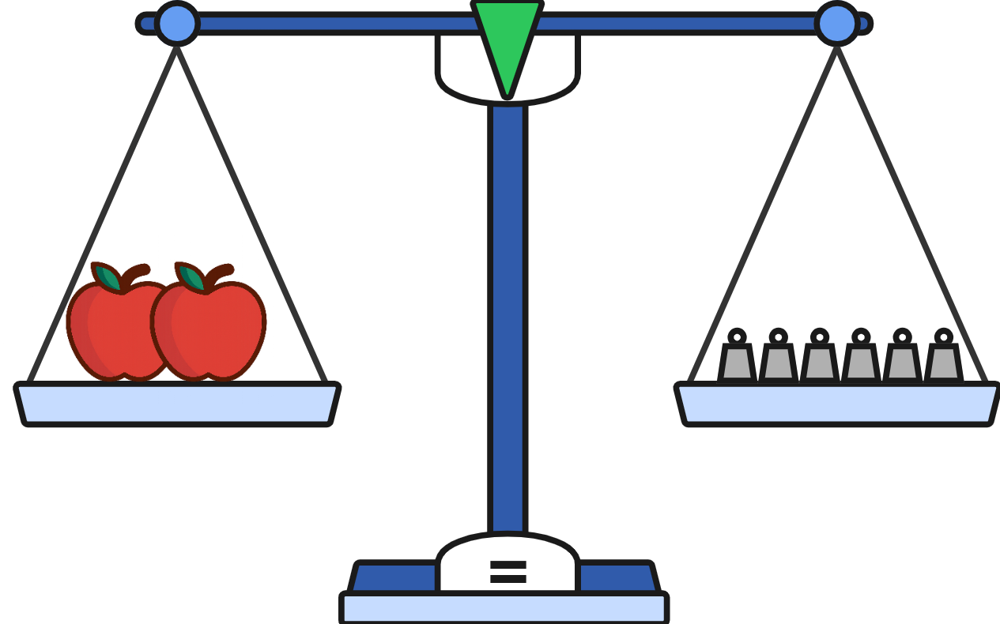
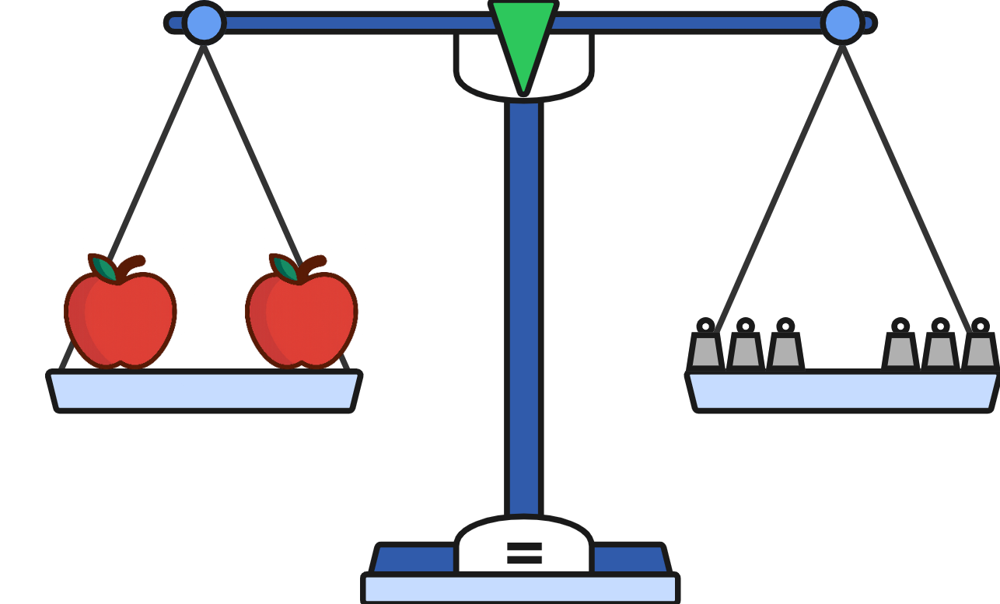
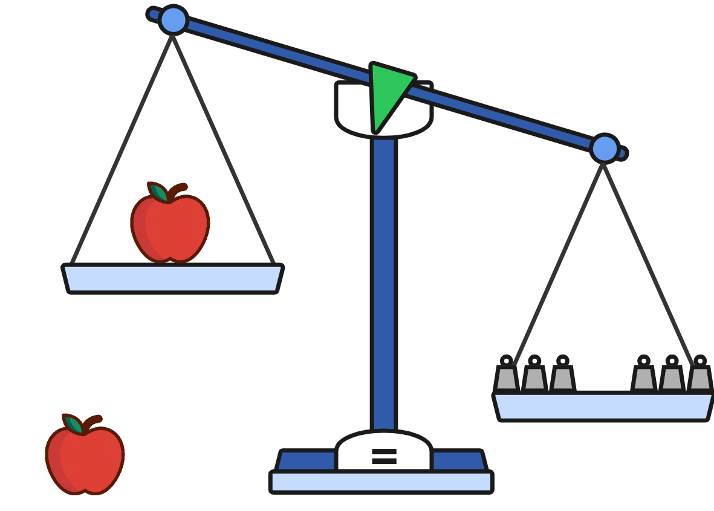
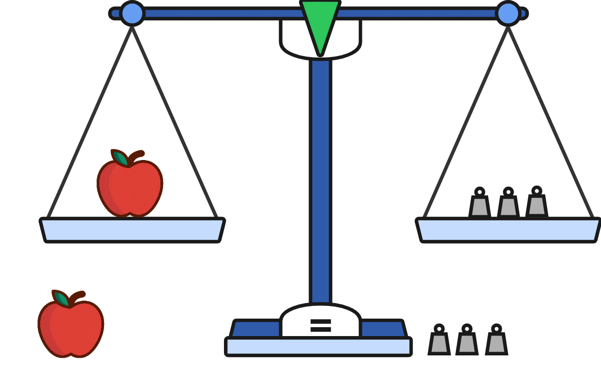

3.1 – Solving One-Step Equations
In Unit 2, we learned how to work with equivalent expressions. Sometimes we could check a number, substitute it into both expressions, and see that they matched. But, with some expressions, we noticed something important:
Some values worked.
Other values didn’t.
This brings us to equations. In this unit, we do the opposite: instead of trying numbers to check if two expressions are equal, we will learn to find the numbers that make them equal.
Those values are called the solutions of the equation.
In this lesson, we begin with the basic rules for solving equations:
Keep both sides equal.
Undo operations step by step until the variable is by itself.
Later lessons will build on these rules to solve more complicated equations.
🔥 Warm-Up
Are \(2(x + 3)\) and \(2x + 6\) equivalent? How do you know?
What value of \(x\) would make \(3x\) equivalent to 27?
If adding 4 to \(x\) makes 9, what is \(x\)?
👥 Learn Together
3.1.1 – One-Step Equations (Addition and Subtraction)
An equation is made up of two expressions separated by an equals sign. Our goal is to find values of the variables in each expression that make the equation true.
You can think of it like a scale with an expression in each pan. When the value of the left-hand side (LHS) is the same as the right-hand side (RHS), the scale will be in balance.

Example 1: One-step equations with addition
Here is a scale with an apple and 2 weights on the left-hand side and with 5 weights on the right-hand side. We would like to know the weight of an apple.
Let a stand for the weight of one apple.

\[ a + 2 = 5 \]
To find the weight a of the apple. We need to get it by itself on one of the pans with weights on the other side. If we do that, and the scale is still in balance, we will know the weight of the apple.
Start by taking the two weights off the left-hand side to get the apple by itself.

\[ a + 2 \textcolor{red}{- 2} = 5 \]
By removing the weights from the left pan, we got the apple by itself, but now the right pan weighs more than the left. We have to take two weights off of the right pan to restore the balance.

\[ \begin{align*} a &= 5 \textcolor{red}{- 2} \\ a &= 3 \end{align*} \]
The weight of the apple is 3.
To solve the equation, we only needed one step – subtract 2 from each side. We always undo addition by subtracting. Subtraction is what we call the inverse operation for addition.
We don’t usually draw pictures to solve equations. Here is what the solutions looks like showing just the algebra.
\[ \begin{align*} a+2 &= 5 \\ a+2 \textcolor{red}{- 2} &= 5 \textcolor{red}{- 2} \snminus{2} \\ a &= 3 \end{align*} \]
\[ \begin{align*} x + 9 &= 11 \\ x + 9 \textcolor{red}{- 9} &= 11 \textcolor{red}{- 9} \\ x &= 2 \end{align*} \]
Example 2: One-step equations with subtraction
Solving equations involving subtraction works the same way with a single difference. We always undo subtraction by adding.
Solve the equation \(x - 5 = 8\).
Here the operation is “subtract \(5\),” so we use its inverse, “add \(5\),” to undo it on both sides.
\[ \begin{align*} x - 5 &= 8 \\ x - 5 \textcolor{red}{+ 5} &= 8 \textcolor{red}{+ 5} \snplus{5} \\ x &= 13 \end{align*} \]
\[ \begin{align*} x - 12 &= 2 \\ x - 12 \textcolor{red}{+ 12} &= 2 \textcolor{red}{+ 12} \\ x &= 14 \end{align*} \]
3.1.2 – One-Step Equations (Multiplication and Division)
Solving one-step equations with multiplication and division is very similar to solving them with addition and subtraction.
Example 3: One-step Equations with Multiplication
Let’s return to our scale with apples and weights. This time, there are 2 apples on the left-hand side and 6 weights on the right. We want to know the weight a of one apple.

\[ 2a = 6 \]
We can see that two apples is the same as 6 weights. Notice that for each apple there are 3 weights.

We get an apple by itself by dividing. Like we saw with addition and subtraction, we can’t divide just one side because it won’t stay balanced.

\[ 2a \textcolor{red}{\div 2} = 6 \]
We have to divide both sides by 2 to maintain the balance.

\[ \begin{align*} 2a \textcolor{red}{\div 2} &= 6 \textcolor{red}{\div 2} \\ a &= 3 \end{align*} \]
An apple has a weight of 3.
Here is the solution showing just the algebra.
\(2a\) means “multiply by \(2\),” so we use the inverse operation, “divide by \(2\),” on both sides.
\[ \begin{align*} 2a &= 6 \\ 2a \textcolor{red}{\div 2} &= 6 \textcolor{red}{\div 2} \sndiv{2} \\ a &= 3 \end{align*} \]
\[ \begin{align*} 3x &= 15 \\ 3x \textcolor{red}{\div 3} &= 15 \textcolor{red}{\div 3} \\ x &= 5 \end{align*} \]
Example 4: One-step Equations With Division
Solving one-step equations with division is the same. But instead of dividing, we multiply.
Solve \(\frac{a}{3} = 1\).
\(\dfrac{a}{3}\) means “divide by \(3\),” so we use the inverse operation, “multiply by \(3\),” on both sides.
\[ \begin{align*} \frac{a}{3} &= 1 \\ \frac{a}{3} \textcolor{red}{\times 3} &= 1 \textcolor{red}{\times 3} \sntimes{3} \\ a &= 3 \end{align*} \]
\[ \begin{align*} \frac{x}{5} &= 10 \\ \frac{x}{5} \textcolor{red}{\times 5} &= 10 \textcolor{red}{\times 5} \\ x &= 50 \end{align*} \]
Do the same move to both sides.
| If you see… | Undo with… | Example |
|---|---|---|
| \(+\) | \(-\) | \(x+7=12\) → \(x=5\) |
| \(-\) | \(+\) | \(x-9=4\) → \(x=13\) |
| \(\times\) | \(\div\) | \(4x=20\) → \(x=5\) |
| \(\div\) | \(\times\) | \(\tfrac{x}{3}=6\) → \(x=18\) |
3.1.3 – Checking a Solution
When you solve an equation, it’s important to check your solution.
This means plugging your answer back into the original equation to see if both sides are equal.
If they match, your solution is correct. If not, you made a mistake along the way.
Example – Check
Solve \(3x = 21\) and check your answer.
\[ \begin{align*} 3x &= 21 \\ 3x \textcolor{red}{\div 3} &= 21 \textcolor{red}{\div 3} \sndiv{3} \\ x &= 7 \end{align*} \]
Check: Substitute \(x = 7\) into the original equation.
\[ 3(\textcolor{red}{7}) = 21 \]
Since both sides equal 21, the solution \(x = 7\) is correct. ✅
Why Check?
- It helps catch arithmetic mistakes.
- It confirms your solution actually works.
- On tests, showing the check can sometimes earn partial credit.
Think of it like testing your answer with a calculator: the equation itself is the calculator, and you’re making sure it “works out.”
Solve \(2y = 10\). Then check your solution.
Solve \(\dfrac{z}{-3} = 5\). Then check your solution.
\(y = 5\), \(2(5) = 10\)
\(z = -15\), \(\dfrac{-15}{-3} = 5\)
✍️ Practice On Your Own
Level 1 – Basic
Solve each equation.
- \(x + 7 = 15\)
- \(m - 12 = -8\)
- \(5y = 40\)
- \(\dfrac{z}{6} = -9\)
- \(-12 = k + 5\)
- \(r - (-8) = 2\)
Level 2 – Moderate
Solve each equation. Be careful with negatives and decimals.
- \(0.4t = 3.2\)
- \(\dfrac{p}{-5} = 11\)
- \(-0.6x = 4.2\)
- \(2y + 0 = 14\)
- \(\dfrac{z}{7} = -2\)
- \(x - 15 = -23\)
Level 3 – Harder
For each, solve and then check your solution by substituting back into the original equation.
- \(-9 = \dfrac{n}{3}\)
- \(\dfrac{3}{4}k = 9\)
- \(-8x = -56\)
- \(\dfrac{w}{-12} = -3\)
- \(1.2y = 0.36\)
- \(c + 14.5 = 2.3\)
- \(\dfrac{2}{5}m = -6\)
- \(\dfrac{x}{-4} = 7\)
- \(2.5n = 0.75\)
- \(-18 = 6 + p\)
Challenge Problems
Set up and solve each situation with a one-step equation.
Paycheck problem: After buying a video game for $38, Jasmine has $25 left. Write and solve an equation to find how much money she had before buying the game.
Distance problem: A car is traveling at 65 miles per hour. After \(h\) hours, the car traveled 325 miles. Write and solve an equation to find how many hours the trip was.
- \(x = 8\)
- \(m = 4\)
- \(y = 8\)
- \(z = -54\)
- \(k = -17\)
- \(r = -6\)
- \(t = 8\)
- \(p = -55\)
- \(x = -7\)
- \(y = 7\)
- \(z = -14\)
- \(x = -8\)
- \(n = -27\) ✔ check: \(-27/3 = -9\)
- \(k = 12\) ✔ check: \((3/4)(12) = 9\)
- \(x = 7\) ✔ check: \(-8(7) = -56\)
- \(w = 36\) ✔ check: \(36 / -12 = -3\)
- \(y = 0.3\) ✔ check: \(1.2(0.3) = 0.36\)
- \(c = -12.2\) ✔ check: \(-12.2 + 14.5 = 2.3\)
- \(m = -15\) ✔ check: \((2/5)(-15) = -6\)
- \(x = -28\) ✔ check: \(-28 / -4 = 7\)
- \(n = 0.3\) ✔ check: \(2.5(0.3) = 0.75\)
- \(p = -24\) ✔ check: \(-18 = 6 + (-24)\)